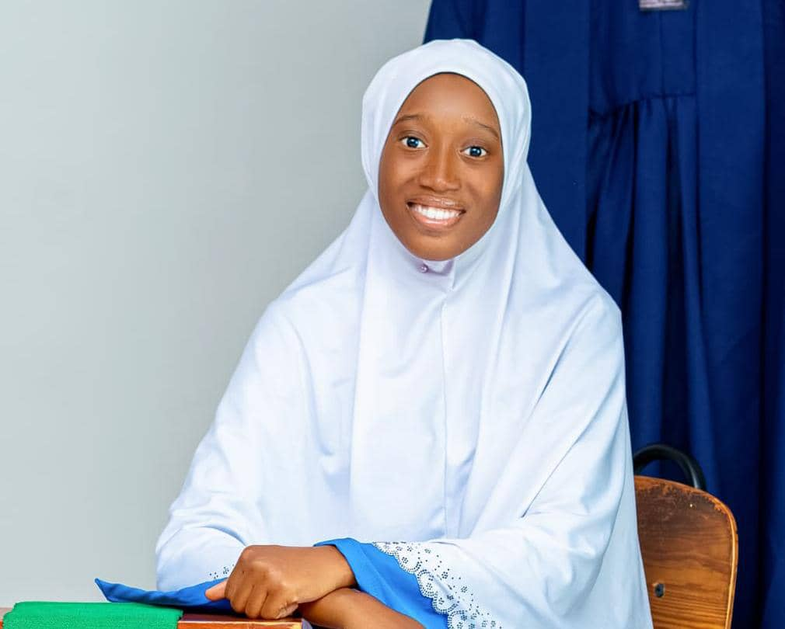

Holla, you’re here because you want to know about me; Muhsinah!
From quality labs to code editors, I’m Muhsinah - exploring food science, sustainability, and full-stack web development.
Meet Muhsinah
Hello! I’m Alaran Muhsinah Moninuola, a recent Food Technology graduate with a growing passion for web development, quality control, and tech-driven problem solving. My background blends scientific precision with creative curiosity, which reflects in the way I approach both food systems and code.
I enjoy reading (mostly fiction), and I'm a proud member of the "I could eat rice every day" club. While I sometimes procrastinate (who doesn’t?), I take great pride in delivering my work with attention and care. Responsibility is a value I carry in everything I do.
This portfolio reflects my journey so far — bridging science, sustainability, and software. I’m excited to keep building and growing.
My Education
Bachelor's Degree in Food Technology
University of Ibadan, Nigeria — 2025
Career Essentials in Generative AI
Microsoft & LinkedIn Learning — 2025

Programming Essentials in Python
OpenEDG — 2022

Software Engineering Scholarship (Ongoing)
Power Learn Project (PLP), Africa — July 2025 Cohort
Interests
Food Technology
I’m focused on quality control, sustainable packaging, and reducing postharvest losses. My academic and hands-on experiences reflect a strong interest in solving food system challenges.
Tech
I'm exploring full stack development; Python, Django, HTML, CSS, JavaScript, with a solution-driven mindset. I enjoy building useful, human-centered tools.
Writing & Documentation
With a background in campus journalism, I’ve developed strong communication skills. I’m now exploring how to apply them to tech; through documentation, content creation, and clear technical communication.
Experience
Food Technology & Quality Control
-
Quality Control Intern — Rite Foods
Skills: Quality testing of soft drinks, packaging inspection, data recording, laboratory procedures, attention to detail. -
Student Intern — Nigerian Stored Products Research Institute
Skills: Post-harvest loss assessment, storage evaluation, experimental data collection, food safety practices -
Student Intern — Ganot Food Labs
Skills: Laboratory analysis, sample preparation, post-harvest quality control, reporting results.
Other Roles
- Journalist — Union of Campus Journalists, University of Ibadan
Technical Skills
- Intermediate proficiency in Python
- Beginner proficiency in Django
- Beginner proficiency in frontend development (HTML, CSS)
- Familiar with version control (Git and GitHub)